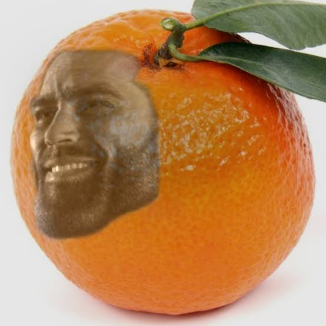

Presentasi Tanaman
Kelompok 5
Nama-Nama Anggota:
Nama Tanaman: Jeruk Nipis
Jenis Tanaman: Dikotil
Jeruk Merupakan salah satu tumbuhan jenis dikotil. Jeruk nipis termasuk salah satu jenis citrus Geruk. Jeruk nipis termasuk jenis tumbuhan perdu yang banyak memiliki dahan dan ranting. Tingginya sekitar 0,5-3,5 m. Batang pohonnya berkayu ulet, berduri, dan keras. Sedang permukaan kulit luarnya berwarna tua dan kusam. Daunnya majemuk, berbentuk ellips dengan pangkal membulat, ujung tumpul, dan tepi beringgit. Panjang daunyya mencapai 2,5-9 cm dan lebarnya 2-5 cm. Sedangkan tulang daunnya menyirip dengan tangkai bersayap, hijau dan lebar 5-25 mm. Bunganya berukuran majemuk/tunggal yang tumbuh di ketiak daun atau di ujung batang dengan diameter 1,5-2,5 cm. kelopak bungan berbentuk seperti mangkok berbagi 4-5 dengan diameter 0,4-0,7 cm berwama putih kekuningan dan tangkai putik silindris putih kekuningan. Daun mahkota berjumlah 4-5, berbentuk bulat telur atau lanset dengan panjang 0,7-1,25 cm dan lebar 0,25-0,5 cm berwarna putih Tanaman jeruk nipis pada umur 2 1/2 tahun sudah mulai berbuah. Buahnya berbentuk bulat sebesar bola pingpong dengan diameter 3,5-5 cm berwarna (kulit luar) hijau atau kekuning-kuningan. Tanaman jeruk nipis mempunyai akar tunggang. Buah jeruk nipis yang sudah tua rasanya asam. Tanaman jeruk umumnya menyukai tempat-tempat yang dapat memperoleh sinar matahari langsung.
kandungan nutrisi penting yang terdapat di dalam jeruk nipis, seperti: Kalium, Vitamin A, Vitamin B, Vitamin C, Vitamin D, Kalsium dan Magnesium
Berikut adalah manfaat jeruk nipis: Meremajakan kulit, Meningkatkan pencernaan, Meningkatkan kekebalan tubuh, Menurunkan berat badan, Menurunkan kadar gula darah, Menyehatkan jantung, Mencegah kanker dan Mengurangi peradangan sendi.

Fungsi utama akar yaitu menyokong dan mengikat tumbuhan pada tanah.
Akar jeruk terdiri dari akar tunggang, akar serabut serta akar-akar rambut. Akar tunggang pada tanaman jeruk dapat mencapai kurang lebih 4 meter jika akar mendapat tanahyang subur dan tidak bertemu dengan tanah yang keras ataupun tanah berair. Hal ini dikarenakan Tanaman jeruk memiliki akar tunggang dengan ujung akar terdiri dari sel- sel muda yang senantisa membelah dan merupakan titik tumbuh akar jeruk. Sel akar ini sangat lembut, sehingga mudah sekali patah kalau menembus tanah yang keras dan padat. Struktur penyusun akar terdiri dari epidermis, korteks, endodermis, dan silinder pusat.bagian - bagian bunga terdiri dari: tangkai bunga, dasar bunga, bakal biji, kelopak, tangkai putik, kepala putik, benang sari, kepala sari, mahkota.